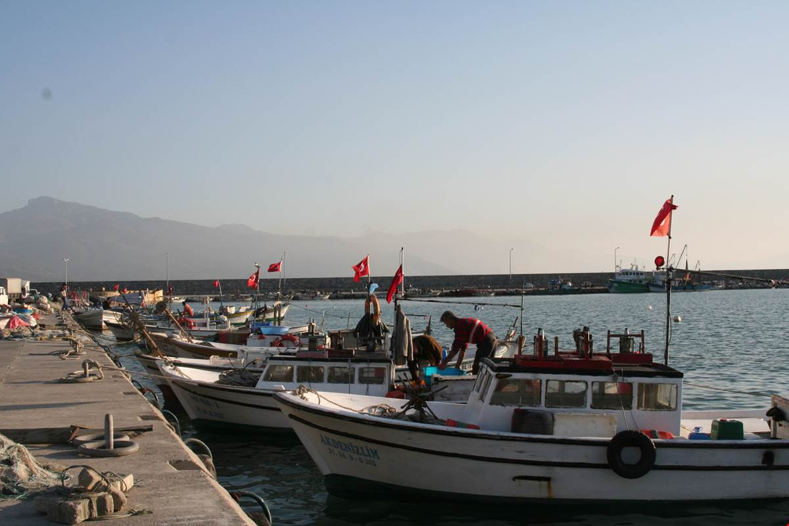

Dörtyol, Hatay'ın ilçelerinden biridir. Nüfusu 127.989 kişi olup bu bakımdan 922 ilçe ve 51 merkez ilçe arasında 192, ilde 4.dür.
Coğrafya
İlçe Doğu Torosların uzantısı olan Nur Dağları (Amanos) ile Akdeniz'in İskenderun Körfezi arasında Kuzey-Güney doğrultusunda uzanan Dörtyol ve Payas Alüvyal ovalarından meydana gelmiştir. Doğusunda Nur Dağlan ve Hassa ilçesi, batısında Akdeniz ve İskenderun Körfezi, Kuzeyinde Erzin ilçesi ve güneyinde ise İskenderun ilçesi bulunmaktadır.
İklimi; yazları sıcak ve kurak, kışları ılık ve yağışlı olup, tipik bir Akdeniz iklimi hüküm sürmektedir. İlçede yağışlar yağmur şeklinde olup, Türkiye'de Rize ilinden sonra en fazla yağış alan merkezlerdendir. İlçe merkezinin denizden yüksekliği 70 m'dir. En çok yağış şubat, mart, nisan ve aralık aylarında, en az yağış ise ağustos ayında yağmaktadır. İlçede kar dağlık yüksek kesimlere düşmektedir. İlçede en düşük sıcaklık -7.0 °C olarak 1985 yılında gerçekleşmiştir. İlçede don hadisesi genellikle mart ayında görülmekte olup, nadiren de olsa kasım, aralık, ocak ve şubat aylarında da görülmektedir.
Kış ayları süresince, Kasım ve Mart arasında, hakim rüzgârlar kuzey ve kuzeydoğu yönündendir. Güneydoğu yönünden esen Yarıkkaya isimli yerel fırtına -rüzgâr hızı saatte 50-60 mile çıkabilmektedir- için kış aylarında her zaman hazırlıklı beklenmelidir. Rüzgâr nisan ayında yön değiştirmeye başlar. Haziran ve eylül ayları süresince güney ve güneybatı rüzgârları hakimdir. Sahildeki en yüksek dalgalar rüzgârın güneybatıdan olduğu zamandadır. Güneybatı rüzgârları sahili ölü dalgalarla etkiler. Bu ölü dalgaların boyları bazen 2-3 metreye ulaşır.
Sahilde ortalama gelgit farkı 0.5 metre civarındadır. Yüzey akıntıları (5-7 metre derinlik) güney ve güneybatıya doğrudur ve ortalama akıntı hızı 0,3 deniz milinden az olup daha derinlerde 0,5 deniz miline ulaşır. İlçenin yüzölçümü 342 km²'dir (132 mil²).
Nüfus
İlçenin 2012 yıl sonu itibarıyla ilçenin nüfus sayımı sonuçlarına göre toplam nüfusu 151.837'dir. İlçe merkezi nüfusu ise 75.110'dur.
İlçeye bağlı 6 köyde toplam 5.451 kişi yaşamaktadır. Yeni idari yapı ile oluşan belde belediyeleri altıya yükselmiş olup, toplam nüfusları 76.727'dir.
İlçe genel nüfusunun %47'si ilçe merkezinde %49'u belde belediyelerinde ve %4'ü ise köylerde yaşamaktadır. Çalışan nüfusun genel nüfus içindeki oranı %30'dur. Çalışan nüfusun meslek gruplarına göre %20'si memur, %40'ı sanayi kolunda çalışan işçi, %15'i esnaf ve serbest meslek erbabı ve %25'i ise tarım kolunda çalışmaktadır.
İdari Durumu
İlçede Merkez Dörtyol Belediyesi olmak ilçeye bağlı 6 köy bulunmaktadır. Ancak iki köyü (Çat, Kapılı) yazın meskun olup, kışın değişik yerlerde ikamet etmektedirler.
İlçe genel olarak toplu yerleşim düzenine hakimdir.
Sosyal Durum
İlçenin il bazında diğer ilçelere nazaran Sosyal, Kültürel ve Ekonomik yönden iyi konumdadır. Hızlı ve planlı yapılaşma ile metropol bir yerleşim alanıdır. İlçe halkının bir kısmı yaz aylarında deniz kenarındaki dinlenme yerlerine ve bir kısmı da hemen yanındaki yaylalara göç etmek suretiyle günlük yaşantılarını sürdürdükleri gözlenmektedir ve her kışa yaklaşırken İlk Kurşun Kültür Sanat ve Turunçgil Festivali yapılmaktadır.[21]
Sağlık
İlçede sağlık hizmetleri 150 yataklı Devlet Hastanesi, 13 Sağlık Ocağı, 2 Sağlık Evi, I Halk Sağlığı Laboratuvarı, 2 tane 112 acil yardım kurtarma istasyonu, 1 Ana Çocuk Sağlığı ve Aile Planlaması Merkezi ile yürütülmektedir.
Sağlık kuruluşlarımızda aile planlaması, aşılama çalışmaları, çevre sağlığı ile halk sağlığı hizmetleri aksatılmadan yürütülmeye çalışılmaktadır.
İş ve çalışma hayatı
İlçe sınırlan içerisinde bulunan Demir-Çelik fabrikası ile Petrol boru hattı ve Gaz dolum tesisleri ile Özel Sektöre ait çok sayıda haddehaneler, un fabrikası, meyve suyu ve meyve paketleme tesisleri ile tarım işletmelerinde istihdam edilen nüfus çalışma hayatına canlılık kazandırmaktadır.
Yörede ziraatın yoğun olması dolayısıyla ilçe dışından mevsimlik işçi gelmektedir.
Sosyal Yardımlaşma ve Dayanışma Vakfı faaliyetleri
İlçe Sosyal Yardımlaşma ve Dayanışma Vakfınca Gıda, barınma, iş kurma ve nakdi yardım gibi çeşitli yardımlar muhtaç olan ailelere yapılmaktadır.
Eğitim durumu
İlçede ilk olarak 1911 yılında merkeze bağlı Özerli Mahallesinde şimdiki adı ile Nurettin Baransel İlkokulunun açıldığı tespit edilmiştir. Bugün ise tüm yerleşim birimleri okula kavuşmuştur. İlçede okuma yazma oranı %98'e tekabül etmektedir. Okul öncesi eğitimi çağ nüfusuna göre oranı %17,5'e tekabül etmektedir. İlçeye ait istatistiki bilgiler aşağıdaki gibidir:
İlkokul ve Ortaokul 44
Genel ve Mesleki Lise 12
Anaokulu(Bağımsız) 4
Özel ilköğretim Okulu 2
Spor ve izcilik Okulu 1
Toplam Derslik Sayısı 881
İlçemizdeki Öğrenci Sayıları
Okul öncesi 1.494
İlkokul ve Ortaokul 22.755
Lise ve Dengi Okullar 7.996
Özel Lise 103
Özel İlkokul-Ortaokul 537
Toplam Öğrenci Savısı 32.885
İlçemizdeki Öğretmen Sayıları
Sınıf Öğretmeni 484
Branş Öğretmeni 886
Okul Öncesi Öğretmeni 40
Toplam Öğretmen Sayısı 1.410
NOT:En eski okulu Nurettin Baransel İlkokulu
Halk Eğitim Merkezi
Halk Eğitim Merkezi Müdürlüğü ve (ASO) bünyesinde çok sayıda vatandaşımıza eğitim içerisinde üretim imkanları sağladığı, birey ve toplumun eğitim ihtiyaçlarının belirlenmesinde bilimsel yöntemlerin uygulandığı, iş gücü piyasası başta olmak üzere kurum ve kuruluşlarla sağlıklı bir işbirliği oluşturduğu, millî kültür ve varlıklarımızın araştırılması, yaşatılması ve toplumun moral değerlerinin yükseltilmesi yönünde çok yönlü çalışmaları gerçekleştirmektedir.
Halk Eğitim Merkezi Müdürlüğünce periyodik olarak Atatürkçülük, Sivil Savunma, İlk Yardım. Aile Planlaması, Gençlerin kötü alışkanlıklarından korunması ve ev ekonomisi konuları işlenmektedir.
Mesleki Eğitim Merkezi
3308 sayılı Kanun ile öğrencilere, gençlere ve esnaf çalışanlarına mesleki eğitimlerini Okul-Endüstri işbirliği içinde geleceklerini daha güvenli olarak hazırlamalarına yardımcı olmaktadır.
İlçedeki Mesleki eğitim merkezi sanayi faaliyetlerinin yoğun oyduğu Payas beldesindeki Mesleki ve Teknik Eğitim Merkezi bünyesinde faaliyetini sürdürmektedir. Müstakil binası yoktur. Ancak Payas sanayi sitesinde mesleki eğitim merkezinin bina yeri temeli atılmış olarak bekletilmektedir.
Mesleki ve Teknik Eğitim Merkezi bünyesinde hem örgün, hem de yaygın eğitim yapılmaktadır.
Özel Öğretim Kurumları
İlçede 10 Dershane, 3 Motorlu Taşıt Sürücü Kursu, 5 Özel Öğrenci Yurdu, 1 Özel İlköğretim Okulu ve 1 adet Öğrenci Etüt Merkezi bulunmaktadır.
Yüksek Okul
İlçede 1 adet Meslek Yüksek Okulu bulunmaktadır. Eğitimini Kuzuculu Kasabasındaki kendi binasında sürdürmektedir. Okulda Endüstriyel Elektronik, Makine, Makine Resim Konsriksiyon, Bilgisayar Teknolojisi ve Programlama, Elektronik Haberleşme, Endüstriyel Otomasyon ve Elektrik bölümlerinde eğitim ve öğretim verilmektedir. Toplam 994 öğrenci eğitim görmektedir.
Kültür

Dörtyol Mutfağı
Tipik Akdeniz ve Hatay Mutfağının birçok özelliğini barındıran Dörtyol mutfağında; zeytinyağı, yeşillikler, nar ekşisi, turunç ekşisi, biber salçası, kekik, kimyon, tarçın gibi baharatlar sık sık kullanılır. Tahıllar (Bulgur, dövme buğday(yarma) önemlidir, Dörtyol mutfağının köklü lezzetleri;
· Ispanaklı ve Kıymalı kömbe
· İçli Köfte (Kıymalı veya Nohutlu) / (Toğga’nın yanıda soğanlı köfte)
· Ekşili Çorba (Ramazan bayramının birinci günü neredeyse her evde pişirilir)
· Yaprak Sarması ve Lahana Sarması (Turunç suyu veya ekşisi ile)
· Mercimekli Sıkmaç
· Dolma (Patlican, biber, kabak, domates)
· Toğga (Soğan kavurmalı içli köfte ve Sömelek ile beraber)
· Pancar Çorbası (7 yıllık derdi götürür)
· Fellah Köftesi (Ispanaklı ekşili köfte) /Ekşili köfte
· Kömeç (Ebegümeci)
· Analı Kızlı (Yuvarlama)
· Etli Nohutlu Dövme Pilavı
· Mantı
· Börek Çorbası
· Çörek (Sadece Ramazan bayramında pişirilen sütlü mayalı ve tarçınlı bir kurabiye, İç cevizli de yapılır)
· Turunç Kabuğu Reçeli,
· Kabak Tatlısı-Reçeli
Bunların yanı sıra;
İlçede; biri merkezde, biri Kuzuculu' da, biri de Yeşilköy de olmak üzere 3 adet Halk Kütüphanesi mevcuttur. Her yıl Geleneksel Portakal Festivali ve halk konserleri düzenlenmektedir.
İlçede günlük olarak 2 yerel gazete çıkmaktadır.
Gençlik ve Spor
İlçe Merkezinde 1500 kişi ve Payas Beldesinde 500 kişi kapasiteli Müsabaka ve Antrenman Spor Salonu bulunmaktadır. 5 ayrı amatör spor kulübü faaliyet sürdürmektedir. Dörtyol, Kuzuculu ve Payas ilçesinde toprak satıhlı birer futbol sahası vardır. Ayrıca Kapalı Spor Salonu bahçesinde çim futbol sahası ve bir adet tenis kortu bulunmaktadır. Ayrıca 4'ü merkezde, 1'i Payas' ta ve 1 de Altınçağ' da olmak üzere 6 adet halı saha mevcuttur.
Öğretmen Evi ve Lokaller
İlçe Merkezinde 63 yataklı bir öğretmen evi hizmet vermektedir. Paya s beldesinde ise 12 yataklı bir öğretmen evi hizmet vermektedir. Kuzuculu beldesinde ise belediye binasında geçici olarak öğretmen lokali mevcuttur.
Ulaştırma ve altyapı kurumları
Genel durum
İlçe Merkezi E-91 karayoluna 3 km uzaklıktadır. Karayoluna paralel olarak Demiryolu geçmektedir. Hava yolundan ,Hatay Havalimanı 9 Aralık 2007'de açılmıştır. Havalimanımız İskenderun ilçesine 30 km, Antakya ilçesine 25 km uzaklıkta bulunmaktadır . deniz yolundan İskenderun bağlantılı olarak faydalanılmaktadır. Tüm köy yolları ulaşıma yeterlidir. Adana-İskenderun istikametinde otoyol mevcuttur.
TRT yayınları rahatlıkla izlenmektedir. Bunun yanı sıra bazı yabancı ülke TV yayınları da seyredilebilmektedir. Ayrıca belediyeler bazı özel TV yayın kuruluşlarının yayınlarını çanak anten vasıtasıyla halka izletmektedir. İlçede 4 adet özel Radyo yayın yapmaktadır.
Elektrik
İlçenin bütün yerleşim yerlerinde yaylalar dahil hepsinde elektrik şebekesi mevcuttur.Ama zaman zaman elektrik kesintileri olmaktadır.
Su
İlçe Merkez, Kasaba ve Köylerinde içme suyu mevcuttur.
Kanalizasyon
İlçe Merkez ve beldelerinde kanalizasyon vardır. Fakat köylerde yoktur.
Telefon Hizmetleri
İlçe Merkezinde ve Payas Kasabasında olmak üzere 2 Telekom İşletmesi mevcuttur. Toplam kapasite 53.287, bağlı olan abone sayısı ise 28.672.dir.
İlçenin bütün yerleşim birimlerinde telefon vardır. Merkez İşletme Şefliğine bağlı ; Kuzuculu, Altınçağ, Yeşilköy, Yeniyurt, Çökek, Çağlalık, Öğme-iş ve Dörtyol-KTS olmak üzere 8 şube vardır.
PTT Hizmetleri
İlçe Merkezinde ve Payas'ta olmak üzere 2 PTT Müdürlüğü bulunmaktadır. Toplam 24 personelle hizmet verilmektedir.
Merkez Müdürlüğüne bağlı Kuzuculu, Altınçağ, Yeniyurt ve Çağlalık olmak üzere 4 acentelik bulunmaktadır.
Mahalli İdareler
Özel İdare
Özel İdare Müdürlüğü kendi iş hanında hizmetini yürütmektedir. Kendi mülkü olan iş hanında 4 lojman ve 2 misafirhane mevcuttur. Ayrıca Kaymakam evi de mevcuttur.
Belediyeler
Merkez belediyesi ile birlikte 7 belediye teşkilatı bulunmaktadır. Bunlar yeni kanunla Dörtyol'un mahallesi olmuşlardır. (Payas ilçe olmuştur) Bu sayıyla toplam 35 mahalle ve 6 köy muhtarlığı vardır.
Dörtyol Belediyesi: Nüfusu 64.430'dur. Kendi hizmet binasında hizmet vermektedir. İlçe genelde imar planına haiz olup, yerleşim plan dahilinde gerçekleşmektedir. İçme suyu şehir ihtiyacını karşılamaktadır. Şehrin kanalizasyon şebekesi çalışmaları devam etmektedir.
Yeniyurt: Nüfusu 11.295'tir. Hizmet binası var ancak yetersizdir. İmar planı yapılmıştır. Kanalizasyon şebekesi yoktur. İçme suyunun bir kısmı yer altı kaynaklarından temin edilmektedir. %80 yeterlidir.
Kuzuculu: Nüfusu 11.279'dur. Kendine ait binada hizmet vermektedir. Binası yeterlidir, İmar planı vardır. Ancak yeniden gözden geçirilmesi gerekmektedir.İçme suyu yeterlidir. Kanalizasyonu yoktur.
Yeşilköy: Nüfusu 10.580.dir. Kendi hizmet binası vardır. İmar planı vardır. Yerleşim imar planı dahilinde gerçekleşmektedir. İçme suyu mevcuttur. Kanalizasyon yoktur.
Karakese: Nüfusu 5.991.dir. Kendi hizmet binası var ancak yetersizdir. Kasabanın yarısının imar planı vardır. Kanalizasyonu yoktur. İçme Suyu yeterlidir.
Altınçağ: Nüfusu 5.219'dur. Kendi hizmet binası vardır. İmar planı vardır. İçme suyu sıkıntısı yoktur. Kanalizasyonu yoktur.
Köyler: İlçeye bağlı Konaklı, Çat ve Kapulu olmak üzere 3 köy vardır. Köylerin tamamının elektrik ve telefonları mevcut olup, yolları da iyi durumdadır.
Yayla Turizmi
Topaktaş-Çökek-Kocadüz-Üçkoz - Aşağı ve Yukarı Bağrıaçık - Taşlı Ufacık Yaylaları (Kuzuculu, İcadiye ve çevresindeki Dörtyol köyleri çıkıyor)
Ulaşım
Dörtyol’a 36 km Erzin'e 19 km asfalt yolla gidilebilir. Yaz aylarında Dörtyol ilçesinden günün her saatinde minibüslerle ulaşım mümkündür.
Özellikleri: Dörtyol ve Erzin ilçesi insanlarının yaz aylarında yoğun olarak kullandığı çam ve köknar ağaçları arasında, doğal dokuya uygun tamamen ahşap basit yayla evlerinin bulunduğu yaylalar topluluğudur. Birbirlerine yakın olan yaylalar, doğa yürüyüşü (trekking) yapmaya elverişlidir.
Dörtyol Çökek Yaylası
Ulaşım
Yaylaya Dörtyol İlçesinden 8 km.lik asfalt yolla ulaşılmaktadır.
Özellikleri
Çam ve meyve ağaçları içerisinde kurulmuş, temiz havası, bol suyu olan bu şirin yayla kamp kurmak, piknik yapmak, orman içi kısa gezintiler yapmak için ideal bir yayladır.
Konaklama-Yeme-İçme
Ulaşım
Yaylada yapı bulunmamaktadır. Kamp yapacakların çadır ve temel ihtiyaç malzemelerini yanlarında getirmeleri gerekmektedir.
Dörtyol Topaktaş Yaylası
Ulaşım
Yaylaya Dörtyol İlçesinden 18 km.lik asfalt yolla ulaşılır.
Özellikleri
Orman ile iç içe olan Topaktaş Yaylası tamamen çam, ardıç ve maki türü ağaçlarla kaplıdır.
Dörtyol Karakese - Pekmezci Yaylası
Ulaşım
Dörtyol ilçesinden 12 km.lik asfalt yolla ulaşılır. Özellikle Karakese beldesi sakinleri ikamet etmektedir.
Özellikleri
Meşe ve Kızılcık ağaçları içinde kurulmuştur. İçme suyu karamezra adı verilen mığır tepenin hemen altındaki bölgeden gelmektedir. İçimi çok güzel olup kireç oranı yok denecek kadar azdır. Sessiz ve dinlenilecek bir yayladır.
Turizm
Sokullu Mehmet Paşa Külliyesi
İskenderun' dan 22 km uzaklıkta İskenderun - Adana karayolu üzerindeki Payas Bölgesindedir. Kervansaray, hamam, medrese, cami ve bedesten gibi yapıları ihtiva eden bu külliye, 16. yüzyılda Sokullu Mehmet Paşa'nın emirleri üzerine Mimar Sinan tarafından yapılmıştır. En önemli yapı gruplarından birisini teşkil eden Kervansaray' ın genişçe bir avlusu vardır. Avlunun etrafında ise yolcuların ve kervanların barınması için kubbeli odalar mevcuttur.
Cin Kulesi
Sokullu Mehmet Paşa Külliyesi ile deniz kıyısı arasında hakim bir tepe üzerine inşa edilmiştir. Kulenin Cenevizliler ya da Haçlılar tarafından yaptırıldığı sanılmaktadır. Kare planlı, tamamen kesme taştan yapılan bu eser gözetleme kulesi olarak yapılmıştır.
Payas Kalesi
Aslen Haçlılar tarafından yaptırılan ve daha sonra da Osmanlılar tarafından restore edilen bu kale Payas'ın en dikkate değer sanat yapıtlarından birisidir. Sokullu Mehmet Paşa Külliyesinin güneyine düşmektedir. sekiz kulesi mevcut olan bu kalenin etrafı düşman saldırılarından korunmak için savunma amaçlı büyük su hendeği ile çevrilmiştir.
Issos Harabeleri
Dörtyol ile Erzin arasındadır. Aslında Pers şehri olan Issos, tarihin en büyük savaşlarından birisi olan Issos savaşının geçtiği yerdir. Burada Makedonya Kralı Büyük İskender Pers Hükümdarı III. Darius' u yenilgiye uğratmıştır. Bugün Antik Issos kentinde geçmişin izlerini taşıyan su depoları, su kemerler ile mabed ve şehir kalıntıları görülebilir.
Mancınık Kalesi
Amanos dağlarında ormanlar içinde önemli bir kaledir. Dörtyol' un kuzeyine düşmektedir. Yayan gezilebilir.
Deniz Turizmi
Dörtyol ilçesi deniz turizmi açısından Hatay'ın en önemli 2.turizm merkezidir. Plajları ve sahilleri düzenli ve bakımlıdır.[kaynak belirtilmeli]
Ekonomi
Türkiye'de narenciye üretimi mandalinası ve portakalı ile ünlüdür. Sebze ve meyve çiftçiliği yapılır. Son yıllarda zeytin tarımı da yapılmaya başlamıştır. Payas ilçesinde bulunan İskenderun Demir-Çelik Fabrikası büyük istihdam kaynağıdır. Payas çevresindeki fabrikalar, Dörtyol ve çevresindeki işletmeler halkın geçim kaynağıdır.
217351015
Iskenderun Teknik Universitesi